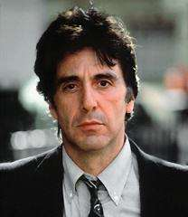

Sea of Love
SUMMARY
Suspense/Mystery. Frank Keller (Pacino) is an NYPD homicide detective investigating a string of killings. All the victims were men who put rhyming ads in the personals, so Keller and his partner Sherman (John Goodman) put in an ad of their own. They go out on dates with all the women who answer the ad. Soon Keller finds himself having a steamy affair with one of the suspects, Helen (Ellen Barkin).
CAST / CREW
Directed by
Harold Becker
Writing credits (WGA)
Richard Price (written by)
Al Pacino .... Det. Frank Keller Ellen Barkin .... Helen John Goodman .... Det. Sherman Michael Rooker .... Terry William Hickey .... Frank Keller Sr. Richard Jenkins .... Gruber Paul Calderon .... Serafino Gene Canfield .... Struk Larry Joshua .... Dargan John Spencer .... Lieutenant Christine Estabrook .... Gina Gallagher (Lonelyheart) Barbara Baxley .... Miss Allen Patricia Barry .... Older woman Mark Phelan .... Murdered man Michael O'Neill .... Raymond Brown (more)
You are Visitor No:
ARTICLES
Movieline article on the 10 All-Time Greatest Movie Kisses.
A kiss can be a beginning, an end, a lie. Some kisses are so intense that there is no tomorrow. These are kisses that never leave you, no matter how long you live; kisses that come out of the deep passion of loneliness rather than love. As a rule such kisses get you into trouble. But they're also the only kind that really matter. Sea of Love has one of those kisses. Al Pacino is a middle-aged, divorced, alcoholic, New York cop on the hunt for a serial killer who responds to men's personal ads and then shoots the individuals who've placed them. Ellen Barkin is a divorced toughie who talks of "animal attraction" and sees a world full of male "creeps" and "manipulators". She's also Pacino's number one suspect. But that mass of honey hair, those asymmetrical lips, the beckoning eyes-he can't deny her. Thus, eventually, the kiss. It's 3 a.m. in Pacino's bachelor apartment. They're boozy, all over each other. He pins her against the wall, but it is really she who's the aggressor. Animal-like she attacks with her lips, then pulls back in a moment of indecision and stalks around the room until she makes up her mind, at which point she flings off her jacket and comes at him. Boosting herself up, she clamps her legs around his waist, letting him bury his face in her chest. Part of her, though, is watching from some remove, fighting her own lack of control as he seeks refuge in her from all the cop shit that has claimed his life. A kiss, a killer, the urgent need of two lonely people. A simple change up for the traditional femme fatale? Maybe. For the moment, Pacino doesn't care. One of those kisses that really matter has hold of him. He's ignoring the possibility that this creature with a mouth could be the killer he's been pursing, and that she could be his own killer too. Those who like their sex dangerous on cold, rainy nights understand. Movieline, Feb 2000
Newspaper interview in USA TODAY by Stephen Schaefer (1989)
"Teasing about Barkin's Strip"
How does Al Pacino measure up to Ellen Barkin's other on screen lovers? Certainly the duo generates enough screen chemistry to rival infamous sessions with Dennis Quaid in the 1987 hit "The Big Easy". In a memorable mock-cop interrogation, Barkin strips down as she pins Pacino against the wall. Then she whispers, mock-tough, 'What are you looking for?"
Barkin points out that she always gets queried about the sex scene and Pacino doesn't. "And he doesn't even take off his clothes," she says exasperatedly.
"That was intentional," Pacino says.
"Her without her clothes and me with my clothes on was part of an idea we had. It's got a twist to it."
Interview with Richard Price, screenwriter for Sea of Love for "Movieline", by F.X. Feeney. I don't know the date. (I've only included the Al-related excerpts)
Q: "What about when the story gets altered to fit the marketplace and actually becomes less of a story?
A: The illusion is, "Gee, if were a director I'd have more power." That's false, The director is just as much under the gun. Take Sea of Love. There's not one word in it that I didn't write, but when I saw it, I was all freaked out-I never mean it to be a "thriller." I mean it to be two hours of high mopery. Very angsty. It probably would not have had as big an audience. I might have been more literate. More original. But hey, I'm working with Universal. It got shoehorned into a thriller-mode so that they could sell it. So you think, "That fuckin' director- that fuckin' Casey Silver, that fuckin' Universal, that fuckin' Marty Bregman, that fuckin' Al Pacino." But to come back to Harold Becker, the director, the illusion is that Harold could have made any kind of picture he wanted to. And yet he's just as much under the gun in that editing room and behind that camera, to make Universal happy, as anybody. And I wouldn't have shot the picture anywhere near as good. My thing would have looked like you'd just held a script to the camera and flipped the pages. Follow the bouncing ball. What do I know? So thought to myself, "Grow up. You want the money, I want the big studio, you want the accessibility, you want the star system - that's the price."
Q: How did Sea of Love get turned into a thriller?
A: My first draft was naive. Dustin Hoffman was going play it but by the time I completed the draft, he was al tangled up with Rain Man. So I became the writer on Rain Man for six weeks, )but then I quit, because I 1couldn't stand it. After that, things kind of cooled between us, and he decided to back away from Sea of Love. And then I just hand delivered it to Al Pacino, myself. In this first draft, the woman character did not come in until pages - 90. It was all like, "Woe is me," for 90 pages of really good scenes, but it was a character study. And then, finally, when this guy can't stand it anymore, he runs into Miss Wrong, and the whole thing happens in one explosive night. The last 15 minutes of the movie are him saying, "I don't care if I die, I've got to get laid, I've got to have some contact." So all this Did-She-orDidn't-She was shoved to the end. So everybody says to me, "Hey, the babe doesn't come in till 90, who are we going to get for that? She's got to be there from the giddyap." So I says, "All right, but not from page one. How about if I bring her in at 30? " They said okay-finally-but even then they were kind of hinky about it. Now, the point is, if I've got a story where the organic structure of it is that the woman comes in on page 90, and all of I can't tell you -- sudden I've got to bring her in on 30, what the fuck am I going to do with her for 60 pages? That's when I had to spin a whole line of Did-She-or-Didn't-She bullshit.
Q: Were you completely alienated from, the project at that point?
A: I no longer felt involved with it. What do they say? Comedy is Tragedy plus Time? Everybody's telling me I've got to turn my movie into Fatal Attraction. Next thing I know, about year later, I'm at a party and I run into James Dearden - the guy that wrote Fatal Attraction. And I said, "Oh. So you're the prick who wrote that thing. I can't tell you how miserable that made my life, I had to make my story like yours." And he said, "Look. I've just got a job directing a movie" - I forget the title, something with Matt Dillon and Sean Young - "and everybody's telling me I've got to make it like "Sea of Love".
Q: You've partly answered this by discussing your research methods, but when I asked, "What does this do to your head?" I was really asking, what it does to your ability to see the world through the eyes of people who still have to struggle for a living. Is there a danger of being cut off from your best material?
A: Not at all. In fact, the good thing about Sea of Love, it gave me the cachet to have access to the world of Jersey City. This drug dealer who's in my book said to me, "If God invented anything better than dope, he kept it to himself." [Laughs] When I heard that I thought, "Yeah, that's pretty good." But then it occurred to me-there is one thing that's more powerful than dope, and that's movies. Because even people who don't like dope love movies. Everybody loves movies. All you've got to say is, "Sea of Love," or "Color of Money," and people look at you. They go weak in the knees. Like, "Would you call him Al, or would you call him Mr. Pacino?" All of a sudden you're like this bridge standing between them and this dream factory we all grew up on. And we're all dopey about. And you've actually been there. You know, it's like when you meet somebody who's actually been in combat in Vietnam. And you just get real quiet. And you look at the guy kind of differently. Everybody's conditioned in this society to be stunned by Hollywood, by the bigness of it. And that gave me access like you can't believe! If I say to them, "Hey. I'm a writer," they're going to look at me strange. "What the fuck do you mean, you're a writer?" "I mean I wrote Sea of Love." "You wrote Sea of Love?" "YES. And now I'm interested in ... YOU." "Yeah? No shit?? Well fuck, man. WHAT DO YOU WANT TO KNOW??? " What I want is a ticket in-and by that I don't mean a ticket in to hang out with Felix Rohatyn or David Dinkins. I've never been interested in how it works at the top. I've always been interested in how it works at the bottom. That's not going to change because of all this money. And I spread around a lot of cash on Clockers. Anybody I could help, I did, though ironically the people who need money the most are the last to accept it-they don't want handouts. So I would find other ways to be helpful. I financed a barbecue for a whole housing project. My attitude was, "You're doing so much for me, what can I do for you I've got my checkbook, I've got my mouth. How can I help?"
REVIEWS
Review By Roger Ebert (major spoilers for those who haven't seen it)
`Sea of Love" tells an ingeniously constructed story that depends for its suspense on the same question posed by "Jagged Edge" and "Fatal Attraction": What happens when you fall in love with a person who may be quite prepared to murder you? The movie stars Al Pacino, looking older and a little lined but more convincing than in most of his other recent roles as a homicide detective who is assigned to a messy murder case. The victim is a male who has been shot in his own bed, and the killer, it appears, was a woman. Tracking down leads, Pacino crosses paths with another detective (John Goodman) handling a similar case. They discover that both of their victims had placed rhyming ads in one of those singles magazines where people advertise for partners. Lacking any other clues, Pacino has a brainstorm: Why don't he and Goodman place an ad of their own, and then date all of the women who answer it? By getting the women's fingerprints on wine glasses, the cops may be able to discover the murderer. This notion leads to one of the movie's better sequences, as Pacino devotes half an hour apiece to assembly-line dates with a series of lonely hearts, while Goodman plays the waiter at his table. Then something unexpected happens. There is chemistry between Pacino and one of the women (Ellen Barkin), and although it is unprofessional and possibly dangerous, he sees her again and they find themselves powerfully attracted to one another. The movie uses this attraction to set a frankly manipulative plot into motion. Is Barkin, in fact, the killer? Various hints are dropped, various clues are planted. Pacino is meanwhile portrayed as so seriously disturbed within himself that he would almost prefer to die at this woman's hands than surrender his love. (The situation has an uncanny parallel with Glenn Close's feelings for Jeff Bridges in "Jagged Edge.") The purely plot elements in "Sea of Love" work well enough until the very end of the movie, I suppose, when the solution turns out to be a red herring. But what impressed me most in the film was the personal chemistry between Pacino and Barkin. There can be little doubt, at this point, that Barkin is one of the most intense and passionately convincing actresses now at work in American movies. Her performance in "The Big Easy" (1987) was Oscar caliber, and again this time she seems to cross some kind of acting threshold. When she roughly embraces Pacino, and then stalks around the room like a tigress in heat before returning to her quarry, there is an energy that almost derails the movie. For Pacino, "Sea of Love" is a reminder of the strong presence he established in street roles in the 1970s, before he drifted away into an unfocused stardom in too many softer roles. This time he seems sharp, edgy, complicated and authentic. Goodman (who plays Roseanne Barr's husband on TV) makes a good partner for him, especially in the scenes where he stands by helplessly while his friend apparently chooses to be in love with a murderess. Movies like this need to work on two levels. The human elements should feel right, and the initial complications of the plot should not be shortchanged at the end. I think the ending of "Sea of Love" cheats by bringing in a character from left field at the last moment. Part of the fun in a movie like this is guessing the identity of the killer, and part of the problem with "Sea of Love" is that the audience is not fairly treated. Technically, I suppose, the plot can be justified. But I felt cheated. I had good feelings for the characters and their relationships, but I walked out feeling the plot played fast and loose with the rules of whodunits.
QUOTES FROM THE FILM
FRANK
I'm sitten' across from Mortisha Adams.
All these people in here with their rocks and their furs, they get robbed, they get raped, all the sudden I'm their daddy. Come the wetass hour I'm everybody's daddy.
I feel like I got the London Philharmonic up my ass here.
People are work
FRANK I get in a beef with a guy, I hit him fast, I hit him a lot I'm outta there. I don't like getting hurt, know what I mean?
SHERMAN Yea, well God gave fat guys guns so they wouldn't have to do that stuff.SHERMAN You think you could go for a babe with a dick?
FRANK Depend on her personality really.HELEN I thought you were an insonmiac.
FRANK I am. I must have fainted.WOMAN IN BAR You're a printer, I got a dick.
QUOTES FROM CAST / CREW
ELLEN BARKIN
(during a scene in which Pacino gets drunk and yells at her) "We did three or four takes, and there was this weird clacking noise. I was terrified. I felt like he might lose it and strangle me right there. Then Al suddenly turned to me and said, 'Could you be, like less...?' and I realized that my hands were shaking so hard that my rings were clacking away." (GQ, September 1992, "Al Alone", by Maureen Dowd)
Catch Samuel Jackson in a cameo as one of the felons arrested at the Yankees breakfast at the beginning.
DVD INFO
Not for sale to persons under age 18.
|
LINKS |
Internet Movie Database (IMD) |
(here is the Al part).... Pukach's proudest moment was implementing one of the country's largest sting operations based on a scene from the Al Pacino movie, "Sea Of Love." The Sheriff's Department sent letters to 4,000 fugitives, telling them they had won a raffle. But when they showed up to collect their winnings, deputies took them into custody. The department collared 1,200 fugitives that day, Pukach remembered, "without ever leaving the office."
{kind=link}
{kind=link}
{kind=link}
{kind=link}
{kind=link}